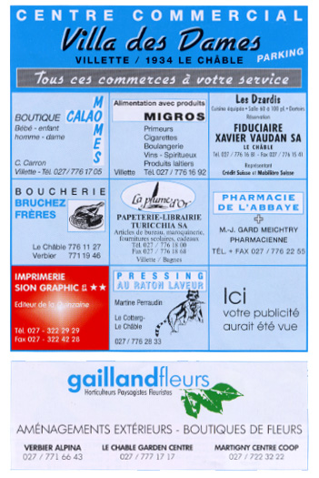
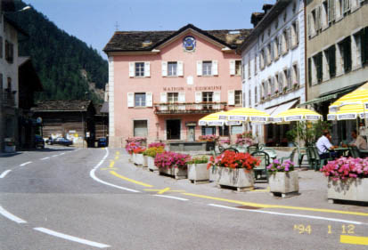

LE
CHÂBLE

Vous recevez des amis et vous voulez servir du rosbif. Où irez-vous pour l’acheter?
Une amie vient d’avoir un bébé. Où est-ce que vous lui achèterez un cadeau?
Est-ce qu’il y a un supermarché parmi les magasins? Comment s’appelle-t-il?
Vous êtes invité ce soir. Où pourrez-vous acheter un bouquet de roses pour votre hôtesse?
Vous avez besoin de disquettes et de stylos. Où irez-vous pour les avoir?

La place
principale du village du Châble. Vous voyez les cafés, la Maison de Commune
(siège de l’administration), et la montagne au fond.